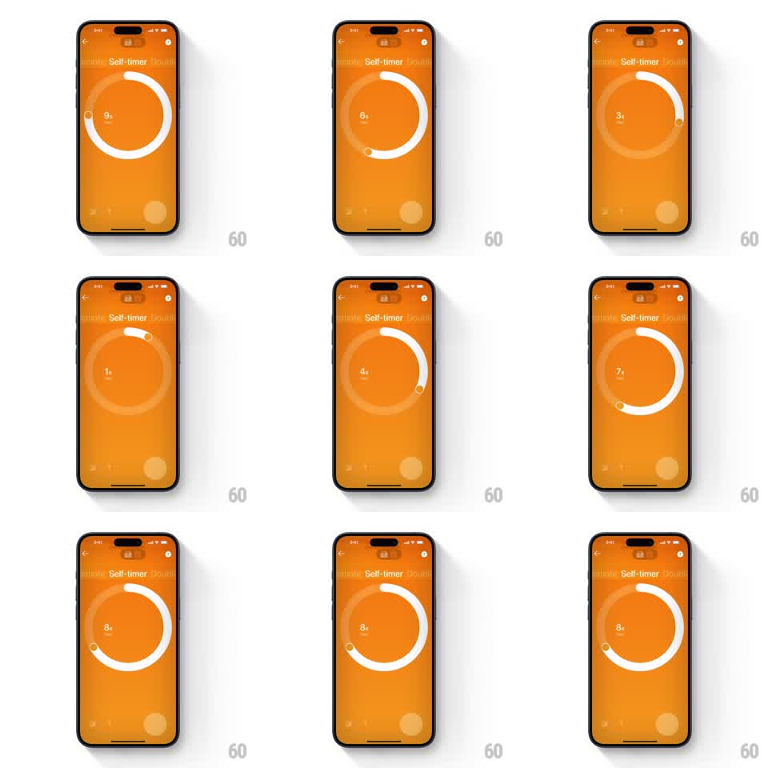

Media
Frame-by-frame

Rebuild this interaction 1:1: Polaroid's self-timer ring - a full circular slider where dragging the handle around the ring draws a white progress arc and updates the seconds readout in real time.

Rebuild this interaction 1:1: Polaroid's self-timer ring - a full circular slider where dragging the handle around the ring draws a white progress arc and updates the seconds readout in real time.
## Integration
Integration: stack-agnostic spec - springs given as stiffness/damping, timed motions as duration + curve; map every value to your framework and animation library of choice.
## Scene
Saturated orange "Self-timer" screen (back chevron top-left). Center: a large thin ring (a faint full circle at 25% white) with a bright white arc drawn from 12 o'clock to a small circular handle; the current value in the middle ("8s" over a tiny "sec" label).
## Motion spec
Pattern: circular drag slider with live progress drawing.
- Dragging the handle (or anywhere on the ring) rotates it around the circle 1:1; the white arc draws/erases behind it in the same frame.
- The center value updates live as the handle crosses each second (1s-10s), numerals crossfading in 100ms.
- Release: the handle snaps to the nearest second mark (spring ~300/18, small overshoot) with a tick haptic per second passed.
- The handle has a soft glow while touched (shadow radius grows 150ms) and the arc brightens to full white at the handle's leading edge.
- Full circle = 10s; the arc wraps continuously through 12 o'clock.
## Calibration
- The arc and handle are one system: the arc's end cap IS the handle - no gap, no lag.
- Readout format is exact: number + "s" large, "sec" small beneath.
## Reduced motion
Handle jumps to the tapped/dragged second (150ms arc redraw); no rotation tracking.
## Don't miss
- The faint full ring stays visible as a track under the bright arc.
- Orange is flat and full-bleed; white is the only UI color.